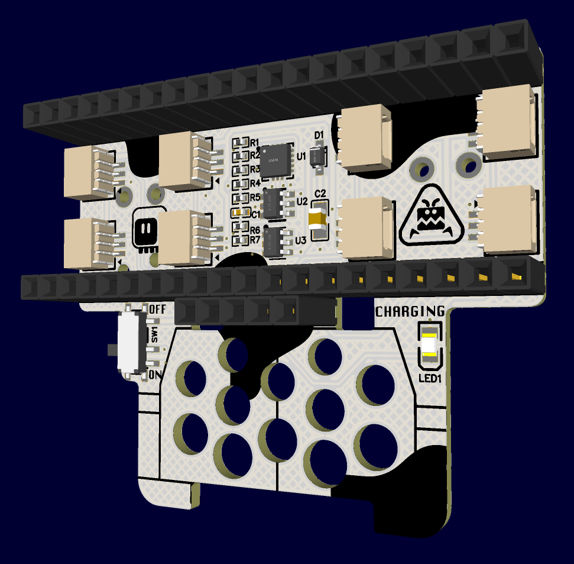
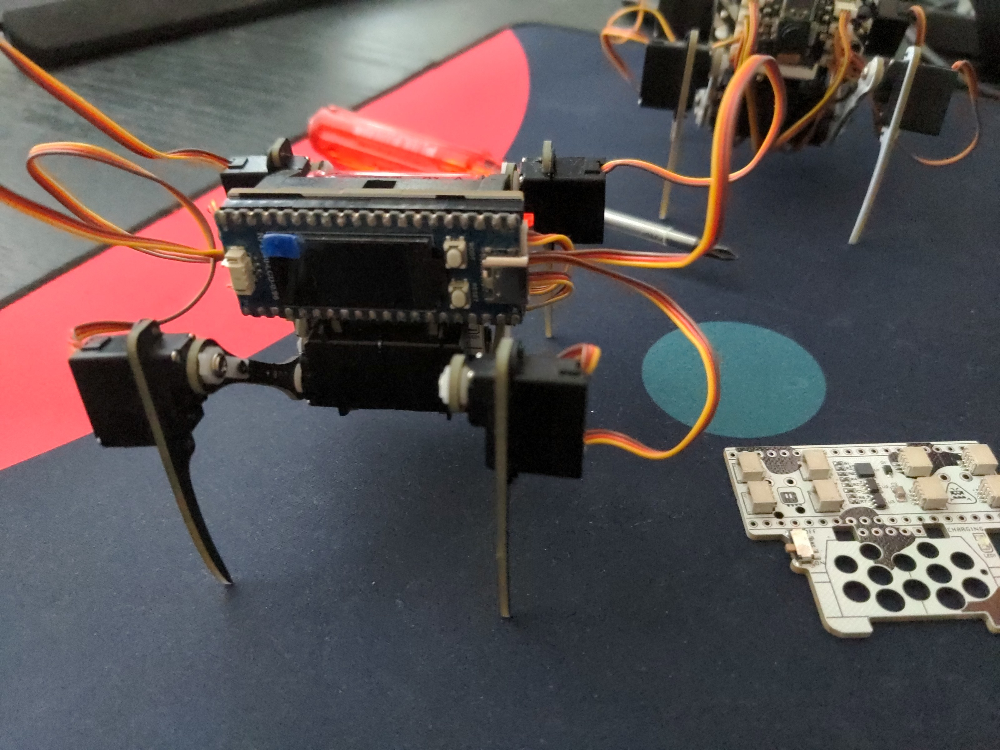

Going Smaller¶
Published on 2024-03-18 in Moo Bug.
Smaller robots are easier. Mostly because of the cube law, which says that the weight of a thing grows proportionally to the third power of the size. A robot twice larger is 8 times heavier, and accordingly needs more power to move, bigger batteries, and more robust materials, which are in turn harder to shape. On the other hand a robot that is half the size could be 8 times lighter, needing proportionately less of everything. So if you are a beginner robot builder, you want to start small.
But not too small! You want to use off-the shelf components, and to be able to work with your hands, preferably without a need of a microscope or special processes. So there is a sweet spot in the size of the robots. When I started with Fluffbug , that size was mostly dictated by the size of the servos that were available. The 9g cheap blue hobby servos were basically the cheapest and easiest to source actuators for a robot that you could get, and the size of both Fluffbug and Moo Bug that is based on it were mostly based on the size and strength of those servos.
But situation changes, the popularity of super-small remote controlled models grows, and the sub-micro-servos used in them are becoming widely available. You can now buy 2g servos for only a little bit more than the 9g servos, and since they are later design, they actually have better features. They work with single LiPO voltages, and they often have larger rotation range. They also use much smaller connectors, which lets you save space on the PCB.
I have been exploring the use of those smaller servos with the Wee Bug , and I’m pretty happy with what you can do with them and a small board like the Xiao. However, sometimes you want to have more pins, so you can add a display, a speaker, maybe some extra servos for hands, additional sensors and so on. So I decided I need a Wee Bug with the pi pico footprint.
That’s how I came up with the version 3.0 of the Moo Bug. You might be surprised here, if you followed the logs of this project before: I never mentioned anything about the version 2.0! That’s true, I had that version designed, the main change was getting rid of the servo connectors and going back to the standard servo plugs. But I never made or published it, so it’s lost to history.
Version 3 switches to through-hole pin headers for the pi pico, to save space, and moves the servo sockets under the microcontroller board. I used a sideways type of sockets this time, so they are pretty low profile. Cable management might be simplified, because you can just tuck the extra cables under the board.\
The electronics is pretty much the same as with the Xiao: battery protection, battery charging, and an accelerometer. The switch and the charging LED have been moved next to the servos, to make room for the servo sockets.
The servos are connected to the pins on the bottom row, so that pi pico clones with a display or other extra features can be used. The mobility of the legs is slightly limited by the wider top of the body, but that doesn’t interfere with walking.
As with the Wee Bug, the legs are made of PCBs, not laser-cut acrylic – at this size the cost difference is negligible, especially when you need to find very thin acrylic sheet. Of course they could also be cut from MDF or 3D printed, at this weight the material doesn’t make much difference. I’m even thinking about a papercraft version of the robot.